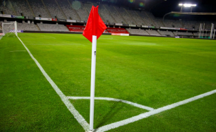

Les règles de base du football
- Durée du match : Un match de football dure 90 minutes, qui se déroule en deux parties appelés « deux mi-temps » qui dure chacune 45 minutes, avec une pause de 15 minutes entre les deux qui n’est pas comprise dans les 90min de jeux
- Objectif : Marquer plus de buts que l’adversaire en envoyant le ballon dans le but adverse. Celui qui a le plus de but remporte le match.
- Nombre de joueurs : Chaque équipe compte 11 joueurs sur le terrain, y compris un gardien de but. Donc 10 sur le champ de jeux et le gardien
Les règles principales
Le ballon à l'intérieur et à l'exterieur du terrain
- Le ballon est "en jeu" tant qu’il n’a pas complètement franchi les lignes de touche ou de but.
- Le ballon est "hors-jeu" lorsqu’il traverse complètement ces lignes.
Le hors jeu aux niveaux joueurs
- Un joueur est considéré comme « hors-jeux » quand il se situe entre le dernier défenseur et le gardien et qu’il reçoit le ballon de la part d’un coéquipier à lui. Le hors-jeu n’est pas comptabilisé si la personne qui attaque est dans sa partie du terrain.
- Si l’attaquant est en position et que c’est un adversaire qui lui fait la passe le « hors-jeux » n’est pas pris en compte car ce n’est pas son coéquipier qui lui fait la passe.
- Ce n’est pas une infraction d’être en position de hors-jeu, sauf si le joueur participe principalement à l'action.
Les fautes et comportement antisportif
- Une faute est sifflée lorsqu’un joueur pousse, charge, frappe, ou joue dangereusement.
- Les comportements antisportifs (protestations, simulation, etc.) peuvent entraîner des avertissements (carton jaune) ou une expulsion (carton rouge). Si un même joueur reçoit deux cartons jaunes dans le même match il reçoit automatiquement un carton rouge donc il est exclu et son équipe joue à 10, le joueur n’est pas autorisé à être remplacé.

Le jeu avec les mains
- Seul le gardien peut utiliser ses mains, et uniquement dans sa surface de réparation. Les autres joueurs ne peuvent pas toucher le ballon avec leurs mains ou leurs bras intentionnellement, sinon ils seront sanctionner en fonction de comment ceci s’est dérouler.
Les coups de pied arrêtés
Coup franc (tir libre en dehors de la surface)
- Accordé après une faute en dehors de la surface.
- Peut-être direct (on peut tirer directement au but) ou indirect (un autre joueur doit toucher le ballon avant un tir).
- Lors d’un coup franc le gardien de but à l’autorisation de mettre en place un mur pour gêner la personne qui frappe le coup franc
Penalty
- Accordé lorsqu’une faute est commise dans la surface de réparation du gardien.
- Tiré depuis le point de penalty, à 11 mètres du but, sans mur de présent.
Coup de pied de coin (corner)
- Accordé lorsque le ballon franchit la ligne de but, après avoir été touché en dernier par un défenseur, sans qu'un but ait été marqué.

Touche
- Si le ballon sort par une ligne de touche, l’équipe adverse effectue une remise en jeu avec les mains, avec les pieds derrières la ligne.

Les règles techniques importantes
Règles de l'avantage
- L’arbitre peut laisser le jeu continuer après une faute si l’équipe victime conserve une situation favorable.
Temps aditionnels
- L’arbitre peut ajouter du temps à la fin de chaque mi-temps pour compenser les interruptions qui peuvent être faite à cause des fautes, buts, remplacements, blessures. Ce qui va permettre de se rapprocher le plus possible des 45 min de mi-temps.
Les remplacements
- Une équipe peut effectuer un certain nombre de remplacements (3 à 5 en fonction de la compétition). Les joueurs remplacés ne peuvent pas revenir sur le terrain jusque-là fin du match.
Les murs défensifs
- Lors d’un coup franc, les joueurs adverses doivent se tenir à au moins 9,15 mètres du ballon en formant un mur pour gêner la frappe de l’adversaire.
L’interdiction des retours volontaires au gardien
- Un gardien ne peut pas prendre le ballon à la main si un coéquipier le lui a passé volontairement avec les pieds, si son coéquipier lui fait une passe la tête la il peut prendre la balle des mains.
Les règles spécifiques
Var (Assistance vidéo à l'arbitrage)
- Utilisée pour vérifier des décisions importantes (but, penalty, carton rouge, etc.).
Surface de réparation
- Les règles spécifiques (penalty, relances du gardien) ne s’appliquent que dans cette zone.
Les positions du mur offensif
- Les joueurs de l’équipe attaquante ne peuvent pas s’intégrer dans le mur défensif sur un coup franc.